animint tutorial
2015-05-13
- Introduction
- Creating, sharing & embedding animint plots
- The grammar of graphics
- Tornado example
- Climate Example
- Implemented Geoms
- Lines
- Points
- Interactive plots and
scale_size() geom_abline()geom_ribbon()geom_tile()geom_path()geom_polygon()geom_linerange()geom_histogram()geom_violin()geom_step()geom_contour()scale_y_log10()andgeom_contour()withstat_density2d()geom_polygonwithstat = 'density2d'contours- Tile plot filled by density
- Density mapped to point size
- Creating maps with animint
- Stacked bar chart
geom_area()withstat_density()geom_freqpoly()geom_hex()
- Session Info
Introduction
This tutorial demonstrates animint – an R package for converting ggplot2 plots into web-based interactive visualizations.
Creating, sharing & embedding animint plots
Suppose we have a basic ggplot2 plot:
library("ggplot2")
data(tips, package = "reshape2")
tips$sex_smoker <- with(tips, interaction(sex, smoker))
p <- ggplot() +
geom_point(data = tips,
aes(x = total_bill, y = tip, colour = sex_smoker))
p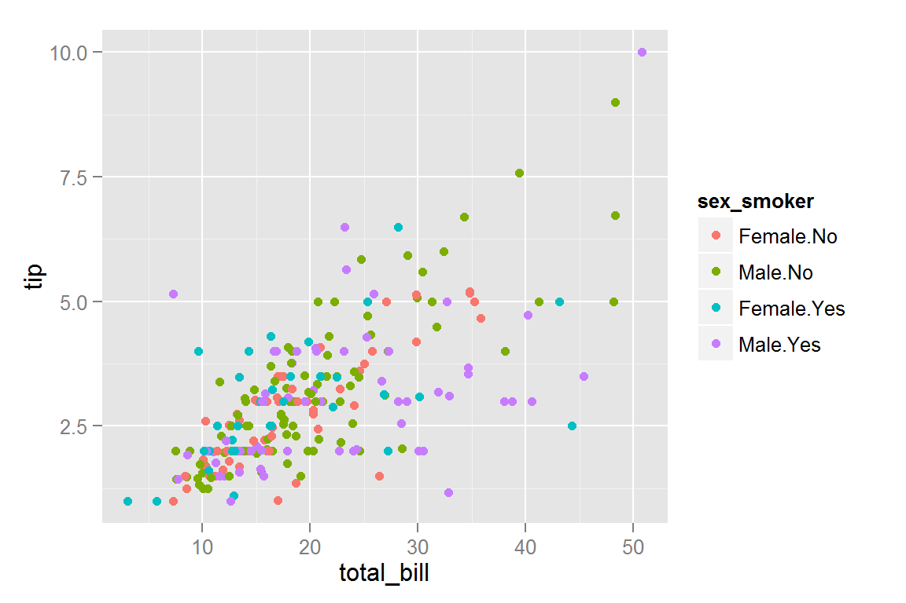
Creating and developing locally
The animint2dir() function is most useful for local development and quickly iterating your animint plots. This function compiles a list of ggplot objects (and a list of other options), compiles them, and write a set of files to a directory. Here we write those files to the “simple” directory.
library("animint")
animint2dir(list(plot = p), out.dir = "simple", open.browser = FALSE)To view the result, you’ll probably want to start a local file server in the “simple” directory. This can be done easily from the R console with the servr package:
servr::httd("simple") # press ESC to stop the server & resume R sessionSeamless embedding with knitr
You can simply add a class of “animint” to a list ggplot objects and knitr will know to call animint2dir() to embed the animint plots in the document.
structure(list(plot = p), class = "animint")Required files will be written to a directory determined by the chunk label. For this reason, you’ll want to specify selfcontained: false when using rmarkdown.
animint plays nice with shiny/rmarkdown
See here to see how to embed animint plots in shiny and here to embed animint plots in interactive documents.
The grammar of graphics
ggplot2 is an implementation of the grammar of graphics which adds the ability to create layered graphics. A layer consists of five components: Data, Aesthetics, Statistics, Geometry, and Positional Adjustment. The figure below shows how the components fit together to make up a layer. To keep the illustration simple, the graphic in this example is composed of just one layer, but ggplot2 (and animint) allows for multiple layers on a single plot.
Extending the grammar to enable linked selection
animint understands two aesthetics in addition to the usual ggplot2 aesthetics: clickSelects and showSelected:

In general, clickSelects/showSelected specifies a link between \(m\) and \(n\) observations. This allows animint to show/hide subsets of data (showSelected) according to the current selection(s) (clickSelects). Statistically speaking, this yields sets of visualizations of conditional distributions – where the conditioning variable is categorical. If you want to condition on a quantitative variable, you can discretize beforehand. For a simple example, let’s continue with the tips data:
p1 <- ggplot() + theme(legend.position = "none") +
geom_point(data = tips,
aes(x = sex, y = smoker,
clickSelects = sex_smoker, colour = sex_smoker),
position = "jitter")
p2 <- ggplot() +
geom_point(data = tips,
aes(x = total_bill, y = tip,
showSelected = sex_smoker, colour = sex_smoker))plots <- list(plot1 = p1, plot2 = p2)
structure(plots, class = "animint")On the left hand panel, we can click the different colours to change the current selection and view the differences in the relationship between bill amount and tips. Notice how bill amount and tip have lower correlation amongst smokers (especially male smokers). The next section shows how we can leverage clickSelects, showSelected, and other animint options to make more complex interactive animations.
Tornado example
Animint includes a dataset from the US National Oceanic and Atmospheric Administration, listing all recorded tornadoes in the US from 1950 - 2006 with GIS information. The data can be found here or loaded into R using the command data(UStornadoes, package = "animint").
library("plyr")
library("maps")
data(UStornadoes, package = "animint")
USpolygons <- map_data("state")
USpolygons$state = state.abb[match(USpolygons$region, tolower(state.name))]
map <- ggplot() +
geom_polygon(aes(x = long, y = lat, group = group),
data = USpolygons, fill = "black", colour = "grey") +
geom_segment(aes(x = startLong, y = startLat, xend = endLong, yend = endLat, showSelected = year),
colour = "#55B1F7", data = UStornadoes) +
ggtitle("Tornadoes in the US")
ts <- ggplot() +
stat_summary(aes(year, year, clickSelects = year),
data = UStornadoes, fun.y = length, geom = "bar") +
ggtitle("Number of Recorded Tornadoes, 1950-2006") +
ylab("Number of Tornadoes") +
xlab("Year")
# specify map width to be 970px
# theme_animint() requires Toby's fork of ggplot2
# devtools::install_github("tdhock/ggplot2")
# (we're hopeful this fork will be merged with ggplot2 master)
map <- map + theme_animint(height = 970)
tornado.bar <- list(map = map, ts = ts)
animint2dir(tornado.bar, "tornado-bar")The resulting plot is better viewed in another tab/window.
Clicking on a specific bar causes the subset of data corresponding to that year to be “selected” and plotted on the US map. We specified this by including showSelected=year in the aes() statement for map, and clickSelects=year in the aes() statement for ts. The graph dynamically updates based on the user’s clicks.
The syntax for this example is slightly tricky, because the standard specification of geom_bar(aes(x=year, clickSelects=year), data=UStornadoes, stat="bin") does not work with animint at this time. This is because clickSelects is not a ggplot2 aesthetic, and so the binning algorithm does not behave properly when clickSelects is specified. Using stat_summary() allows us to avoid this behavior.
Simpler bar plots
In order to make bar plots with stat_bin() somewhat easier, animint includes a make_bar() function, which helps facilitate bar charts with clickSelects aesthetics.
ts <- ggplot() + make_bar(UStornadoes, "year") +
ggtitle("Number of Recorded Tornadoes, 1950-2006") +
ylab("Number of Tornadoes") +
xlab("Year")
tornado.bar <- list(map = map, ts = ts, width=list(map = 970, ts = 500), height=list(500))
animint2dir(tornado.bar, "tornado-bar2")This code produces the same plot, but with a much more intuitive syntax.
Plot Themes
We typically do not want plot axes and labels displayed on a map, because it’s obvious what the x and y axes are. While animint does not support all of ggplot2’s theme() options, it does support removing the axes, labels, and axis titles.
To fully remove all evidence of the axes, we must separately remove axis lines, ticks, text (axis break labels), and titles.
map <- ggplot() +
geom_polygon(aes(x = long, y = lat, group = group),
data = USpolygons, fill = "black", colour = "grey") +
geom_segment(aes(x = startLong, y = startLat, xend = endLong, yend = endLat, showSelected = year),
colour = "#55B1F7", data = UStornadoes) +
ggtitle("Tornadoes in the US") +
theme(axis.line = element_blank(), axis.text = element_blank(),
axis.ticks = element_blank(), axis.title = element_blank()) +
theme_animint(width = 970)
tornado.bar <- list(map = map, ts = ts)
animint2dir(tornado.bar, "tornado-bar3")You can see the resulting plot here. Notice that the axes have been removed from the map, leaving only the data displayed on that plot.
We may want to allow users to select a state as well as a year, so that the bar chart shows the number of tornadoes over time for a specific state, and the map shows the tornadoes that occurred during the selected year. To do this, we will need to create a summarized dataset. We’ll create a data frame that contains the number of tornadoes occurring in each state for each year in the dataset.
UStornadoCounts <-
ddply(UStornadoes, .(state, year), summarize, count=length(state))Text that responds to clickSelects
The make_text() function included in animint makes it easy to create text describing what has been selected. In this case, we would like to display the year on the US map, and we would like to show the state on the bar chart. This interactivity does not work with ggtitle() at this time, but we can create a “title” element on the plot itself instead using make_text.
Syntax is make_text(data, x, y, label.var, format=NULL) where format can be specified using a string containing %d, %f, etc. to represent the variable value.
map <- ggplot() +
make_text(UStornadoCounts, -100, 50, "year", "Tornadoes in %d") +
geom_polygon(aes(x = long, y = lat, group = group, clickSelects = state),
data = USpolygons, fill = "black", colour = "grey") +
geom_segment(aes(x = startLong, y = startLat, xend = endLong, yend = endLat,
showSelected = year),
colour = "#55B1F7", data = UStornadoes) +
theme(axis.line = element_blank(), axis.text = element_blank(),
axis.ticks = element_blank(), axis.title = element_blank()) +
theme_animint(width = 970)
ts <- ggplot() +
make_text(UStornadoes, 1980, 200, "state") +
geom_bar(aes(year, count, clickSelects = year, showSelected = state),
data = UStornadoCounts, stat = "identity", position = "identity") +
ylab("Number of Tornadoes") +
xlab("Year")
tornado.ts.bar <- list(map = map, ts = ts)
animint2dir(tornado.ts.bar, "tornado-ts-bar")Here is the resulting plot.
Animation
Animint also allows you to automatically change the selection or data shown so that the plot is animated. An element named time in the list provided to animint2dir() allows you to set the following arguments:
- the variable that will advance over time
- ms, the length of time in milliseconds between transitions
- duration, the time used to switch between values (in milliseconds).
make_tallrect()
This example also demonstrates the make_tallrect() function, which populates a graph with bars spanning the entire y range located at each value of the variable passed in, with clickSelects element to match. Syntax ismake_tallrect(data, x.name, alpha=1/2)
map <- ggplot()+
geom_polygon(aes(x = long, y = lat, group = group, clickSelects = state),
data = USpolygons, fill = "black", colour = "grey") +
geom_segment(aes(x = startLong, y = startLat, xend = endLong, yend = endLat,
showSelected = year),
colour = "#55B1F7", data = UStornadoes) +
make_text(UStornadoCounts, -100, 50, "year", "Tornadoes in %d") +
theme(axis.line = element_blank(), axis.text = element_blank(),
axis.ticks = element_blank(), axis.title = element_blank()) +
theme_animint(width = 970)
ts <- ggplot()+
make_tallrect(UStornadoCounts, "year")+
make_text(UStornadoes, 1980, 200, "state") +
geom_line(aes(year, count, clickSelects = state, group = state),
data = UStornadoCounts, alpha = 3/5, size = 4) +
ylab("Number of Tornadoes") +
xlab("Year")
tornado.anim <- list(map = map, ts = ts)
# append the time object in as another object in the main list.
tornado.anim$time <- list(variable = "year", ms = 2000)
animint2dir(tornado.anim, "tornado-anim")Here is the resulting plot with animation.
Climate Example
Dataset: 2006 Data Expo data, from NASA Goddard Institute for Space Studies. Data is a subset of the monthly climatology of the International Satellite Cloud Climatology Project (ISCCP). Dataset contains monthly observations of atmospheric variables 1995-2000, for a 24x24 grid of locations over North, South, and Central America between 113.75ºW-56.25ºW, 21.25ºS-36.25ºN with 2.5º grid spacing. Dataset contains information such as cloud cover at low, med, and high altitudes, temperature, surface temperature, pressure, and ozone concentration. Temperatures given are in Celsius.
Dataset description adapted from one of the submitted posters
library("animint")
library("maps")
library("lubridate")
library("plyr")
data(climate, package = "animint")
climate$time2 <- decimal_date(ymd(as.character(climate$date)))
countries <- map_data("world")
# Map coordinate limits chosen so that the polygons displayed are at least reasonably complete.
countries <- subset(countries, (lat < 38) & (lat > -24))
countries <- subset(countries, ((-long) > 54) & ((-long) < 118))
# Create variable showing temp-avg.monthly.temp at that location
climate <- ddply(climate, .(id, month), transform,
tempdev = temperature - mean(temperature),
surfdev = surftemp - mean(surftemp))
climate <- climate[order(climate$date, climate$id), ]
# data frame with formatted labels
dates <- ddply(climate, .(date), summarise, month = month[1],
year = year[1], time2 = time2[1],
textdate = paste(month.name[month], year))
dates <- dates[order(dates$date),]As data consists of both time-sequence and spatial data, we might want to link some sort of time-series plot to maps displaying the spatial data. We might also want to be able to click on a portion of the map and see the relevant time series. This suggests that we will need at least two selectors: id, which identifies the spatial location, and time2, which is a continuous numerical representation of the time sequence, starting at 1995.000.
tempseq <- ggplot() +
make_tallrect(data = climate, "time2") +
geom_line(data = climate, aes(x = time2, y = temperature, group = id, showSelected = id)) +
geom_text(data = dates, aes(x = 1998, y = -5, label = textdate, showSelected = time2))This code chunk defines a plot that shows the temperature over time for a selected spatial location, and contains many tallrect()’s (rectangles spanning the y range that break up the x axis) that select a specific point in time. If we view this plot in R, showSelected is not a recognized aesthetic, and so ggplot displays all of the lines at once, and all of the tallrects are also displayed in the background. It’s a pretty messy plot!
tempseq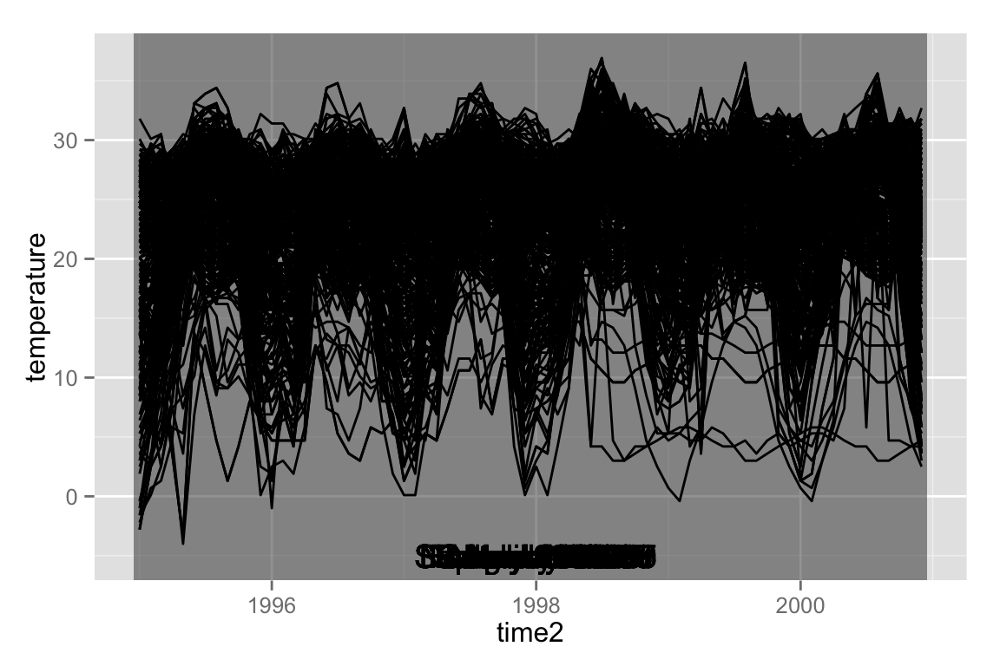
In order to be able to select an ID, we must have at least one other plot in our animint plot list. Let’s start with a plot that shows how each location compares to its average monthly temperature. Note that this quantity was computed in the code chunk at the beginning of this section.
# we will re-use this set of elements, so let's define a function to add them to a plot p with tiles.
# we can't define the base plot first because the path must be drawn on top of the tiles.
plainmap <- function(p){
p + geom_path(data = countries, aes(x = long, y = lat, group = group)) +
geom_text(data = dates,
aes(x = -86, y = 39, label = textdate, showSelected = time2))+
theme(axis.line = element_blank(), axis.text = element_blank(),
axis.ticks = element_blank(), axis.title = element_blank())
}
# tiles with temperature data to serve as the background for the plot.
temptiles <- ggplot() +
geom_tile(data = climate,
aes(x = long, y = lat, fill = tempdev,
clickSelects = id, showSelected = time2)) +
scale_fill_gradient2("deg. C", low = "blue", mid = "white",
high = "red", limits = c(-20, 20),
midpoint = 0) +
ggtitle("Temperature Deviation from Monthly Norm")
airtemp <- plainmap(temptiles)The theme() statement removes the axis, axis labels, and axis title from the plot, since maps are fairly self-explanatory and longitude and latitude values don’t provide much additional information. The geom_text() statement is used where one would typically use a make_text() statement, but in this case, we want a format that is not easily derived from the showSelected variable.
Now that we have both plot types that we need for the selectors we’ve chosen, we can add animation and output to animint:
animint2dir(list(timeseriestemp = tempseq,
airtemp = airtemp,
time = list(variable = "time2", ms = 3000),
selector.types = list(id = "multiple"),
width = list(450),
height = list(450)
), out.dir = "climate/onemap")The time variable defines which selector will change sequentially, in this case, time2. In addition, the plot will change every 3000 milliseconds, or every 3 seconds. We will cover the entire time period in 216 seconds, or about 3.5 minutes.
Here is the animint-generated webpage. Click on the islands off the coast of South America, and see if you can determine in what year El Nino (warming of the Pacific Ocean off the coast of South America) occurred. How much of the plot seems to be effected by this event?
We can also add additional maps. The dataset contains ozone data, surface temperature data, and cloud cover data.
surftemp <- plainmap(p = ggplot() +
geom_tile(data = climate,
aes(x = long, y = lat, fill = surftemp,
clickSelects = id, showSelected = time2)) +
scale_fill_gradient2("deg. C", low = "blue", mid = "white",
high = "red", limits = c(-10, 45),
midpoint = 0) +
ggtitle("Surface Temperature"))
ozone <- plainmap(p = ggplot() +
geom_tile(data = climate,
aes(x = long, y = lat, fill = ozone,
clickSelects = id, showSelected = time2))+
scale_fill_gradient("Concentration", low = "white", high = "brown") +
ggtitle("Ozone Concentration"))
cloudshigh <- plainmap(p = ggplot() +
geom_tile(data = climate,
aes(x = long, y = lat, fill = cloudhigh,
clickSelects = id, showSelected = time2)) +
scale_fill_gradient("Coverage", low = "skyblue", high = "white",
limits = c(0, 75)) +
ggtitle("High Altitute Cloud Cover"))
cloudsmid <- plainmap(p = ggplot() +
geom_tile(data = climate, colour = "grey",
aes(x = long, y = lat, fill = cloudmid,
clickSelects = id, showSelected = time2))+
scale_fill_gradient("Coverage", low = "skyblue", high = "white",
limits = c(0, 75)) +
ggtitle("Mid Altitute Cloud Cover"))
cloudslow <- plainmap(p = ggplot() +
geom_tile(data = climate, colour = "grey",
aes(x = long, y = lat, fill = cloudlow,
clickSelects = id, showSelected = time2)) +
scale_fill_gradient("Coverage", low = "skyblue", high = "white",
limits = c(0, 75)) +
ggtitle("Low Altitute Cloud Cover"))
animint2dir(list(timeseriestemp = tempseq,
airtemp = airtemp,
surftemp = surftemp,
cloudslow = cloudslow,
cloudsmid = cloudsmid,
cloudshigh = cloudshigh,
ozone = ozone,
time = list(variable="time2", ms=3000),
selector.types = list(id = "multiple"),
width = list(timeseriestemp=900,
airtemp=450, surftemp=450, ozone=450,
cloudslow=450, cloudsmid=450, cloudshigh=450),
height = list(450)
), out.dir = "climate/lotsofmaps")Here is the animint-generated webpage. This page may a while to load due to the large amount of elements the browser must render.
Implemented Geoms
Most, but not all ggplot2 geoms are implemented in animint.
Lines
Simple lines
This should work exactly as in ggplot2.
dat <- data.frame(x = rep(1:10, times = 5), group = rep(1:5, each = 10))
dat$lt <- c("even", "odd")[(dat$group %% 2+1)] # linetype
dat$group <- as.factor(dat$group)
dat$y <- rnorm(length(dat$x), dat$x, .5) + rep(rnorm(5, 0, 2), each = 10)
#' Simple line plot
p1 <- ggplot() +
geom_line(data = dat,
aes(x = x, y = y, group = group)) +
ggtitle("geom_line")
#' Simple line plot with colours...
p2 <- ggplot() +
geom_line(data = dat,
aes(x = x, y = y, colour = group, group = group)) +
ggtitle("geom_line + scale_colour_discrete")
lines_simple <- list(p1 = p1, p2 = p2)
lines_simple## $p1##
## $p2animint2dir(lines_simple, "geoms/line-simple")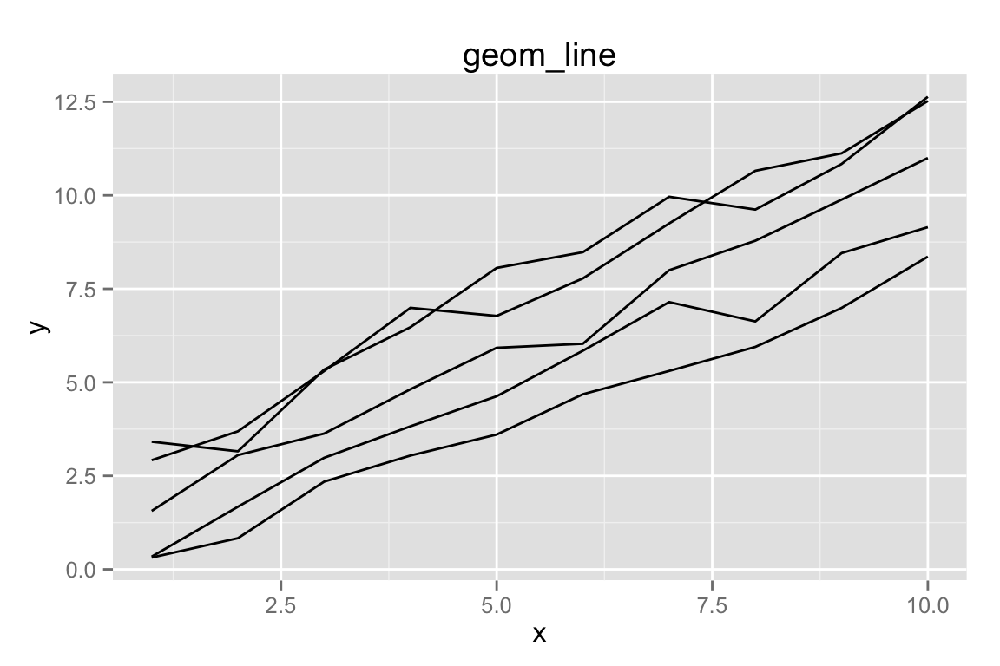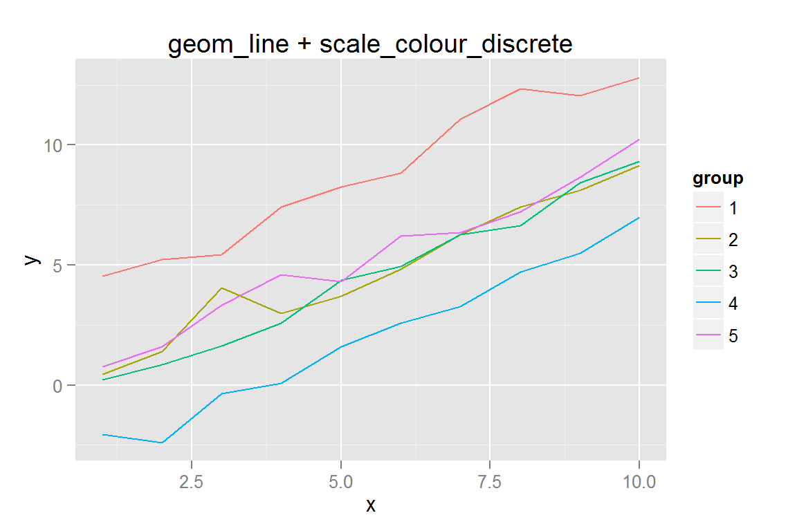
Click here to see the resulting animint plot(s).
Linetypes
ggplot2 has several methods of linetype specification, all of which are supported in animint.
#' Simple line plot with colours and linetype
p3 <- ggplot() +
geom_line(data = dat,
aes(x = x, y = y, colour = group, group = group, linetype = lt)) +
ggtitle("geom_line + scale_linetype_manual")
p3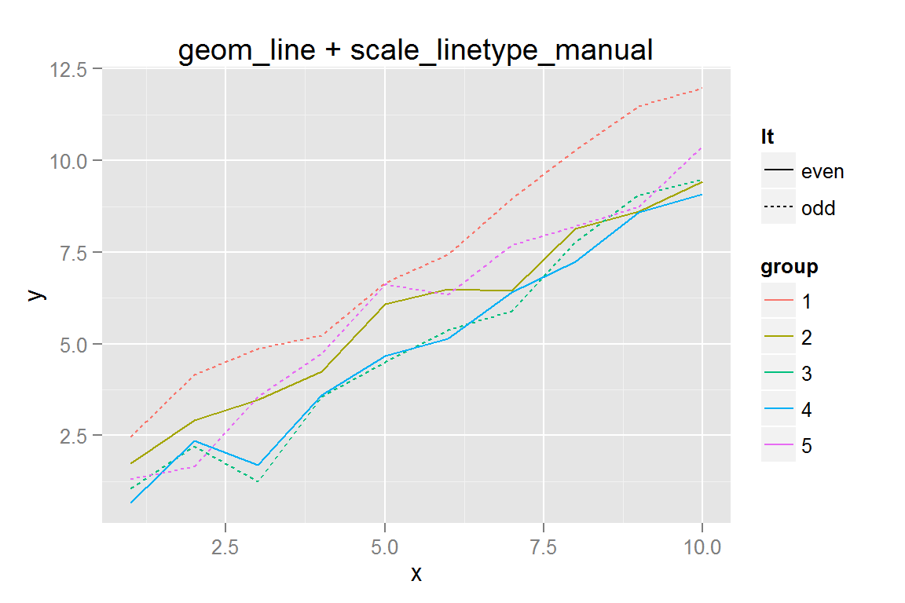
#' Use automatic linetypes from ggplot with coerced factors
p4 <- ggplot() +
geom_line(data = dat,
aes(x = x, y = y, colour = group, group = group, linetype = group)) +
ggtitle("geom_line + scale_linetype automatic")
p4
#' Manually specify linetypes using <length, space, length, space...> notation
dat$lt <- rep(c("2423", "2415", "331323", "F2F4", "solid"), each = 10)
p5 <- ggplot() +
geom_line(data = dat,
aes(x = x, y = y, colour = group, group = group, linetype = lt)) +
scale_linetype_identity("group", guide = "legend",
labels = c("1", "2", "3", "4", "5")) +
scale_colour_discrete("group") +
ggtitle("Manual Linetypes: dash-space length")
p5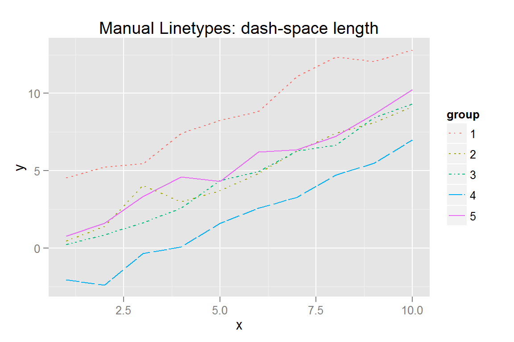
#' All possible linetypes
lts <- scales::linetype_pal()(13)
lt1 <- data.frame(x = 0, xend = .25, y = 1:13, yend = 1:13,
lt = lts, lx = -.125)
p6 <- ggplot() +
geom_segment(data = lt1,
aes(x = x, xend = xend, y = y, yend = yend, linetype = lt)) +
scale_linetype_identity() +
geom_text(data = lt1, aes(x = lx, y = y, label = lt), hjust = 0) +
ggtitle("Scales package: all linetypes")
lts2 <- c("solid", "dashed", "dotted", "dotdash", "longdash", "twodash")
lt2 <- data.frame(x = 0, xend = .25, y = 1:6, yend = 1:6, lt = lts2, lx = -.125)
p7 <- ggplot() +
geom_segment(data = lt2,
aes(x = x, xend = xend, y = y, yend = yend, linetype = lt)) +
scale_linetype_identity() +
geom_text(data = lt2, aes(x = lx, y = y, label = lt), hjust = 0) +
ggtitle("Named linetypes")
line_types <- list(p3 = p3, p4 = p4, p5 = p5, p6 = p6, p7 = p7)
animint2dir(line_types, "geoms/line-types")Click here to see the resulting animint plot(s).
Alpha scales and lines
#' Spaghetti Plot Data
n <- 500
pts <- 10
data2 <- data.frame(x = rep(1:pts, times = n), group = rep(1:n, each=pts))
data2$group <- as.factor(data2$group)
data2$y <- rnorm(length(data2$x), data2$x*rep(rnorm(n, 1, .25), each = pts), .25) + rep(rnorm(n, 0, 1), each = pts)
data2$lty <- "solid"
data2$lty[which(data2$group %in% subset(data2, x == 10)$group[order(subset(data2, x == 10)$y)][1:floor(n/10)])] <- "3133"
data2 <- ddply(data2, .(group), transform, maxy = max(y), miny = min(y))
data2$below0 <- factor(sign(data2$miny) < 0)
qplot(data = data2, x = x, y = y, group = group, geom = "line", alpha = I(.2))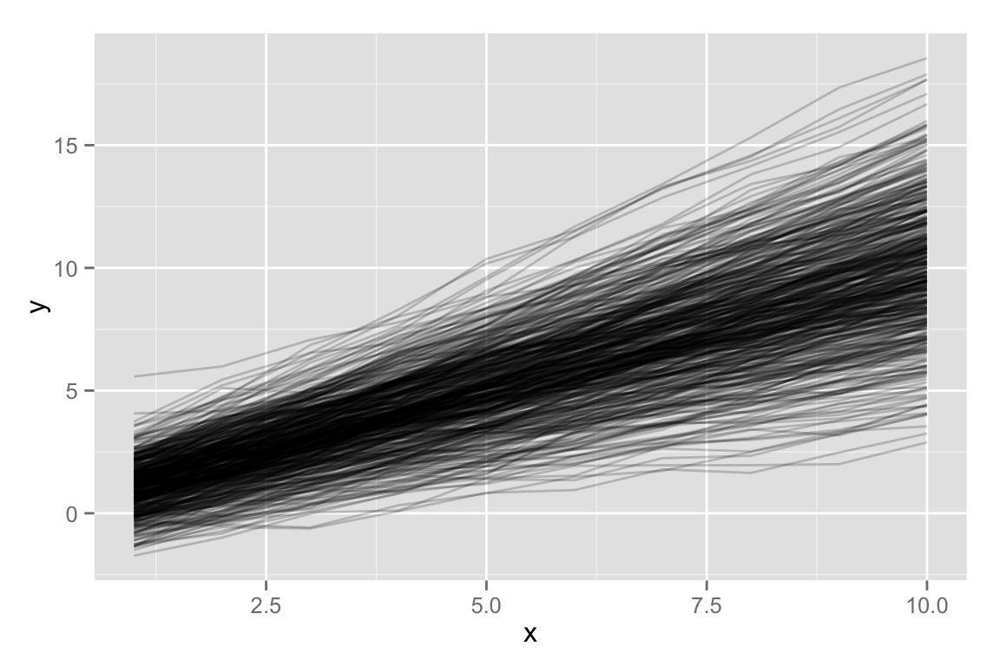
#' scale_alpha
p8 <- ggplot() +
geom_line(data = data2, alpha = .1,
aes(x = x, y = y, group = group)) +
ggtitle("Constant alpha")
p9 <- ggplot() +
geom_line(data = subset(data2, as.numeric(group) < 50),
aes(x = x, y = y, group = group, linetype = lty),
alpha = .2) +
scale_linetype_identity() +
ggtitle("Constant alpha, I(linetype)")
p10 <- ggplot() +
geom_line(data = subset(data2, as.numeric(group) < 50),
aes(x = x, y = y, group = group, linetype = below0, alpha = maxy)) +
scale_alpha_continuous(range = c(.1, .5)) +
ggtitle("Continuous alpha")
#' Size Scaling
p11 <- ggplot() +
geom_line(data = subset(data2, as.numeric(group) %% 50 == 1),
aes(x = x, y = y, group = group, size = (floor(miny) + 3)/3)) +
scale_size_continuous("Line Size", range = c(1,3)) +
ggtitle("Continuous size")
p12 <- ggplot() +
geom_line(data = data2,
aes(x = x, y = y, group = group, alpha = miny, colour = maxy)) +
scale_alpha_continuous(range = c(.1, .3)) +
ggtitle("Continuous Alpha and Colour")
alphas <- list(p8 = p8, p9 = p9, p10 = p10, p11 = p11, p12 = p12)
animint2dir(alphas, "geoms/alphalines")Click here to see the resulting animint plot(s).
Points
In general, points are exactly the same in animint and ggplot2, with two exceptions: * Shapes are not supported in animint at this time, because d3 only provides about 6 shapes total, and it is thus not possible to map shapes from R to d3 faithfully. * In R, most shapes do not have separate colour and fill attributes. In d3, points have both colour and fill attributes, so it is possible to get at least 2 shapes with animint: filled and open circles. * If you specify colour but not fill, animint will attempt to set fill for you. If you want open circles, use fill=NA. * Specifying colour and fill will work in animint, but may not show up on the ggplot2 plot, as ggplot2 does not typically use the fill aesthetic for points.
scale_colour() and geom_point()
# Randomly generate some data
scatterdata <- data.frame(x = rnorm(100, 50, 15))
scatterdata$y <- with(scatterdata, runif(100, x-5, x+5))
scatterdata$xnew <- round(scatterdata$x/20)*20
scatterdata$xnew <- as.factor(scatterdata$xnew)
scatterdata$class <- factor(round(scatterdata$x/10) %% 2,
labels = c("high", "low"))
quants <- quantile(scatterdata$x) + c(0, 0, 0, 0, .1)
qs <- rowSums(sapply(quants, function(i) scatterdata$x < i))
scatterdata$class4 <- factor(qs, levels = 1:4, ordered = TRUE,
labels = c("high", "medhigh", "medlow", "low"))
s1 <- ggplot() +
geom_point(data = scatterdata, aes(x = x, y = y)) +
xlab("very long x axis label") +
ylab("very long y axis label") +
ggtitle("Titles are awesome")
#' Colours, Demonstrates axis -- works with factor data
#' Specify colours using R colour names
s2 <- ggplot() +
geom_point(data = scatterdata, aes(x = xnew, y = y), colour = "blue") +
ggtitle("Colours are cool")
#' Specify colours manually using hex values
s3 <- ggplot() +
geom_point(data = scatterdata,
aes(x = xnew, y = y, colour = class, fill = class)) +
scale_colour_manual(values = c("#FF0000", "#0000FF")) +
scale_fill_manual(values = c("#FF0000", "#0000FF")) +
ggtitle("Manual colour/fill scales")
#' Categorical colour scales
s4 <- ggplot() +
geom_point(data = scatterdata,
aes(x = xnew, y = y, colour = xnew, fill = xnew)) +
ggtitle("Categorical colour/fill scales")
#' Color by x*y axis (no binning)
s6 <- ggplot() +
geom_point(data = scatterdata,
aes(x = x, y = y, color = x*y, fill = x*y)) +
ggtitle("Continuous color scales")
points_simple <- list(s1 = s1, s2 = s2, s3 = s3, s4 = s4, s6 = s6)
points_simple## $s1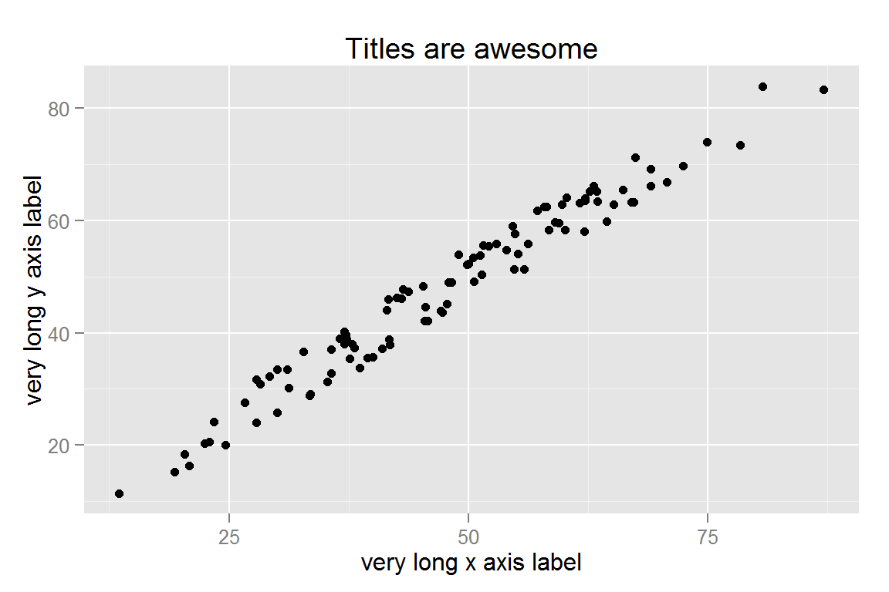
##
## $s2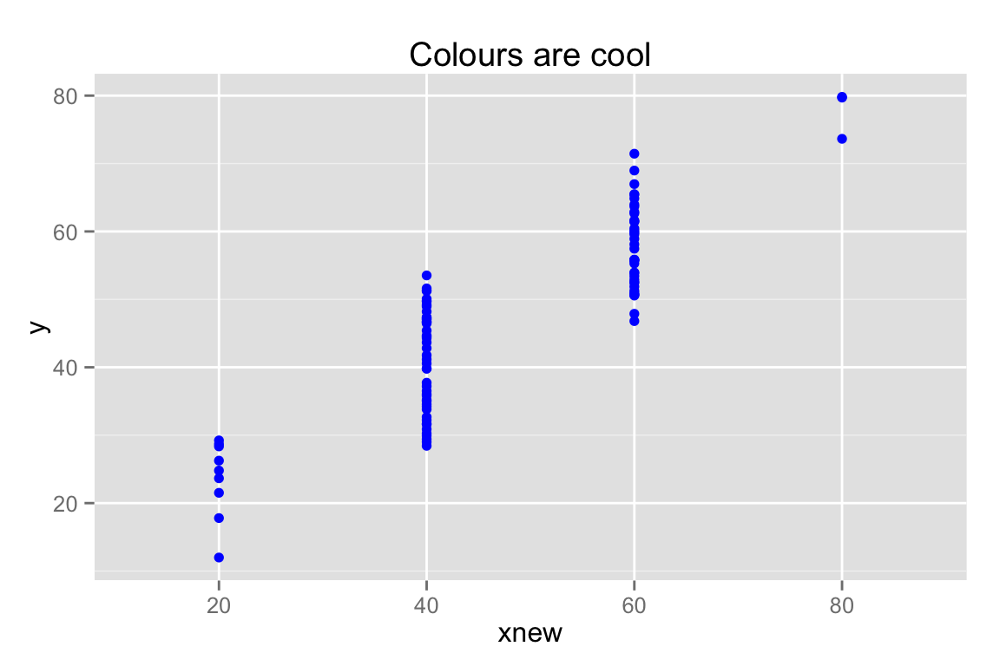
##
## $s3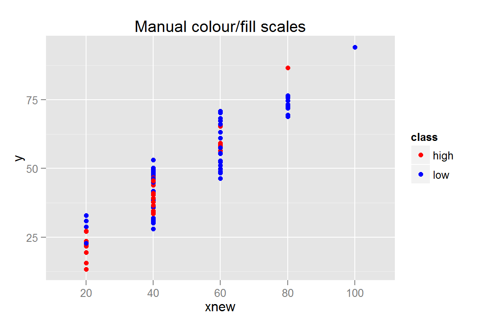
##
## $s4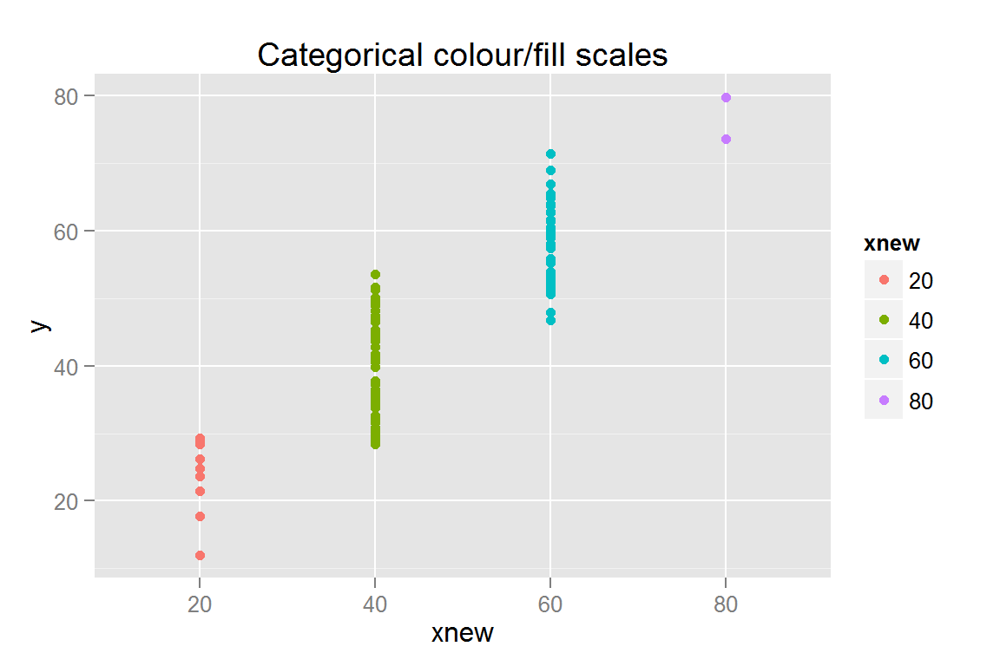
##
## $s6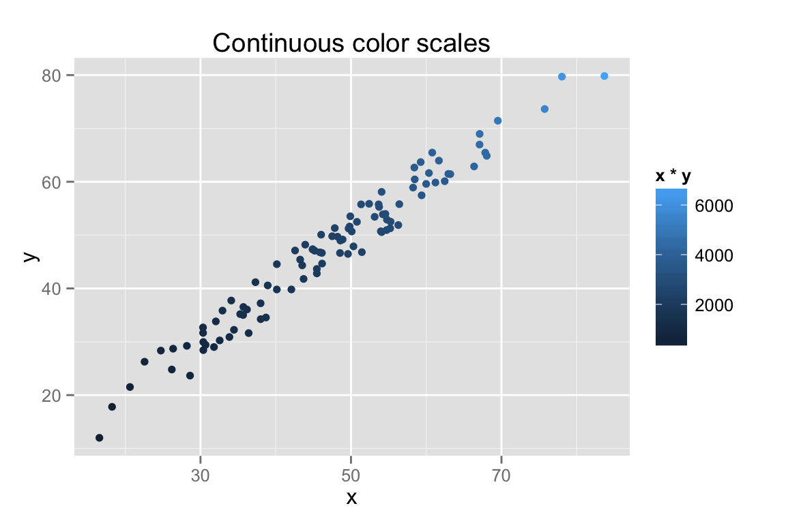
animint2dir(points_simple, "geoms/point-simple")Click here to see the resulting animint plot(s).
geom_jitter()
s5 <- ggplot() +
geom_jitter(data = scatterdata,
aes(x = xnew, y = y, colour = class4, fill = class4)) +
ggtitle("geom_jitter")
s5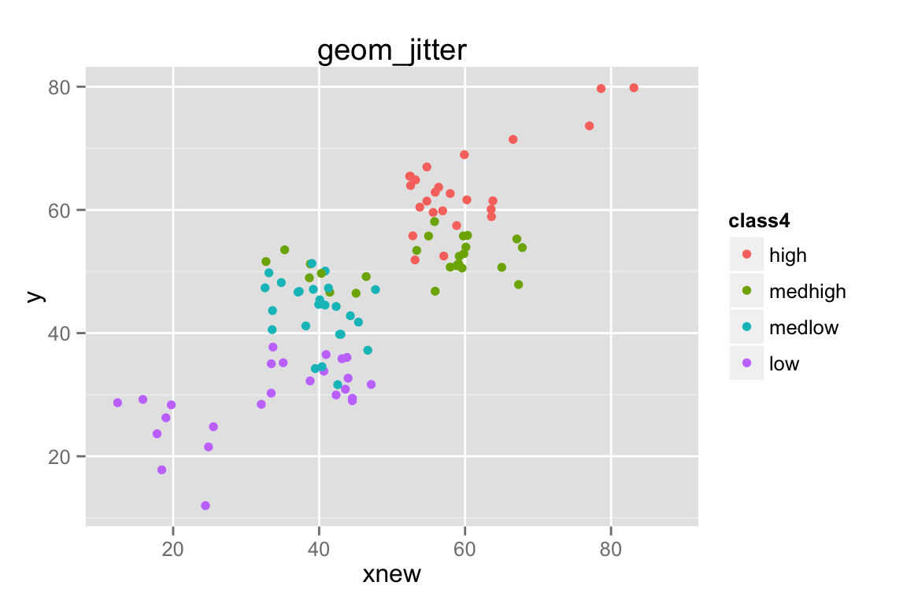
animint2dir(list(s5 = s5), "geoms/jitterplots")Click here to see the resulting animint plot(s).
Interactive plots and scale_size()
With showSelected, it is sometimes useful to have two copies of a geom - one copy with low alpha that has no showSelected or clickSelects attributes, and another copy that is interactive. This allows the data to be visible all the time while still utilizing the interactivity of d3.
library("plyr")
scatterdata2 <- data.frame(x = rnorm(1000, 0, .5),
y = rnorm(1000, 0, .5))
scatterdata2$quad <- c(3, 4, 2, 1)[with(scatterdata2,
(3 + sign(x) + 2*sign(y))/2 + 1)]
scatterdata2$quad <- factor(scatterdata2$quad,
labels = c("Q1", "Q2", "Q3", "Q4"), ordered = TRUE)
scatterdata2 <- ddply(scatterdata2, .(quad),
transform, str = sqrt(x^2 + y^2)/4)
scatterdata2.summary <- ddply(scatterdata2, .(quad), summarise,
xmin = min(x), xmax = max(x), ymin = min(y),
ymax = max(y), xmean = mean(x), ymean = mean(y))
qplot(data = scatterdata2, x = x, y = y, geom = "point", colour = quad)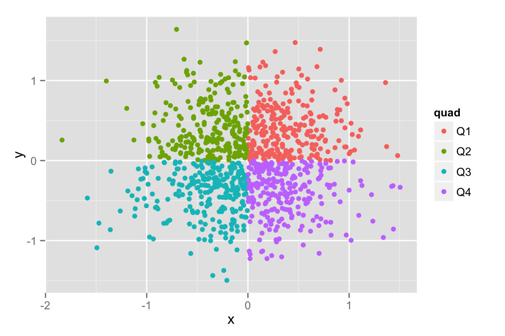
#' Interactive plots...
s7 <- ggplot() +
geom_rect(data = scatterdata2.summary, alpha = .3,
aes(xmax = xmax, xmin = xmin, ymax = ymax, ymin = ymin,
colour = quad, fill = quad, clickSelects = quad)) +
geom_point(data = scatterdata2.summary, size = 5,
aes(x = xmean, y = ymean, colour = quad,
fill = quad, showSelected = quad)) +
geom_point(data = scatterdata2, aes(x = x, y = y), alpha = .15) +
scale_colour_discrete(guide = "legend") +
scale_fill_discrete(guide = "legend") +
scale_alpha_discrete(guide = "none") +
ggtitle("Selects & Means")
#' Single alpha value
s8 <- ggplot() +
geom_point(data = scatterdata2, alpha = .2,
aes(x = x, y = y, colour = quad, fill = quad)) +
geom_point(data = scatterdata2, alpha = .6,
aes(x = x, y = y, colour = quad, fill = quad,
clickSelects = quad, showSelected = quad)) +
guides(colour = guide_legend(override.aes = list(alpha = 1)),
fill = guide_legend(override.aes = list(alpha = 1))) +
ggtitle("Constant alpha")
#' Continuous alpha
s9 <- ggplot() +
geom_point(data = scatterdata2, alpha = .2,
aes(x = x, y = y, colour = quad, fill = quad)) +
geom_point(data = scatterdata2,
aes(x = x, y = y, colour = quad, fill = quad, alpha = str,
clickSelects = quad, showSelected = quad)) +
guides(colour = guide_legend(override.aes = list(alpha = 1)),
fill = guide_legend(override.aes = list(alpha = 1))) +
scale_alpha(range = c(.6, 1), guide = "none") +
ggtitle("Continuous alpha")
#' Categorical alpha and scale_alpha_discrete()
#' Note, to get unselected points to show up, need to have two copies of geom_point: One for anything that isn't selected, one for only the selected points.
s10 <- ggplot() +
geom_point(data = scatterdata2,
aes(x = x, y = y, colour = quad, fill = quad, alpha = quad)) +
geom_point(data = scatterdata2,
aes(x = x, y = y, colour = quad, fill = quad,
alpha = quad, clickSelects = quad, showSelected = quad)) +
guides(colour = guide_legend(override.aes = list(alpha = 1)),
fill = guide_legend(override.aes = list(alpha = 1))) +
scale_alpha_discrete(guide = "none") + ggtitle("Discrete alpha")
#' Point Size Scaling
#' Scale defaults to radius, but area is more easily interpreted by the brain (Tufte).
s11 <- ggplot() +
geom_point(data = scatterdata2, alpha = .5,
aes(x = x, y = y, colour = quad,
fill = quad, size = str)) +
geom_point(data = scatterdata2, alpha = .3,
aes(x = x, y = y, colour = quad, fill = quad,
size = str, clickSelects = quad, showSelected = quad)) +
ggtitle("Scale Size")
s12 <- ggplot() +
geom_point(data = scatterdata2, alpha = .5,
aes(x = x, y = y, colour = quad, fill = quad, size = str)) +
scale_size_area() + ggtitle("Scale Area")
pts <- list(s7 = s7, s8 = s8, s9 = s9, s10 = s10, s11 = s11, s12 = s12)
pts## $s7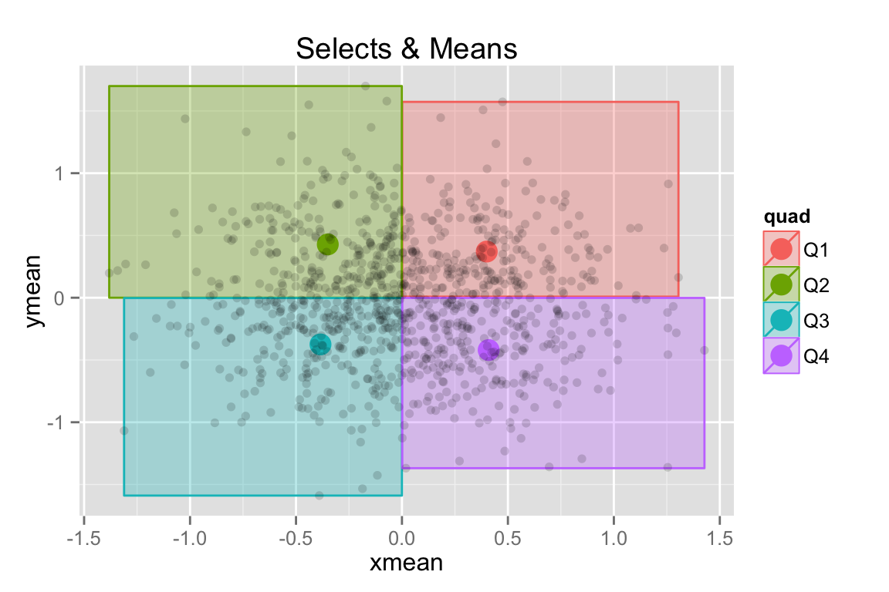
##
## $s8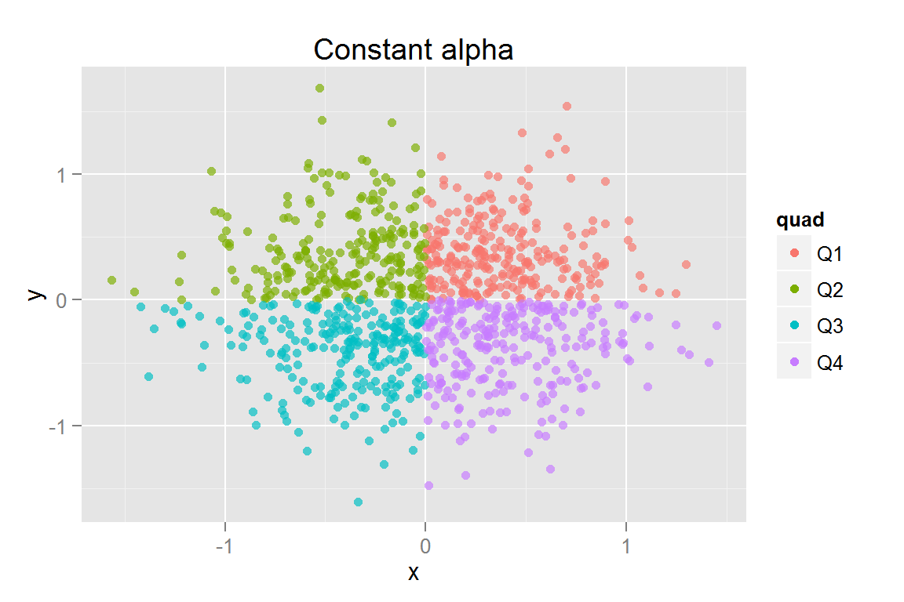
##
## $s9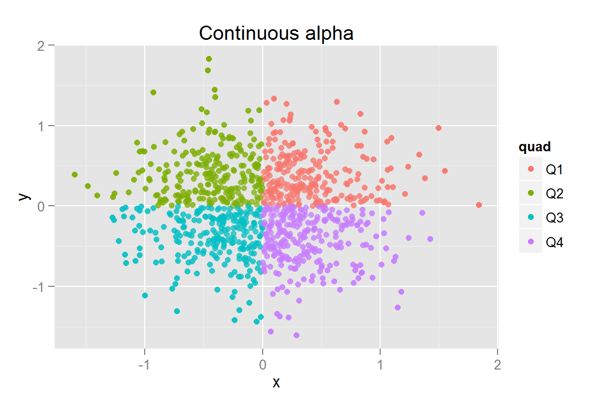
##
## $s10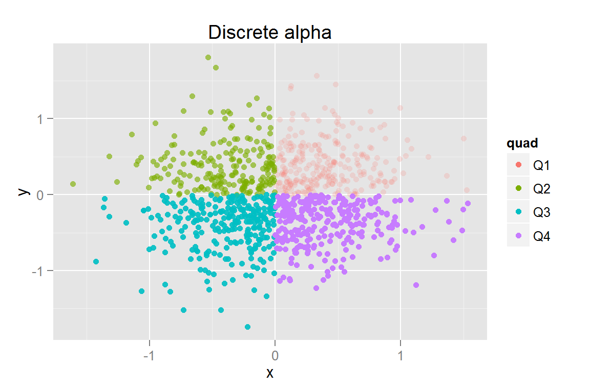
##
## $s11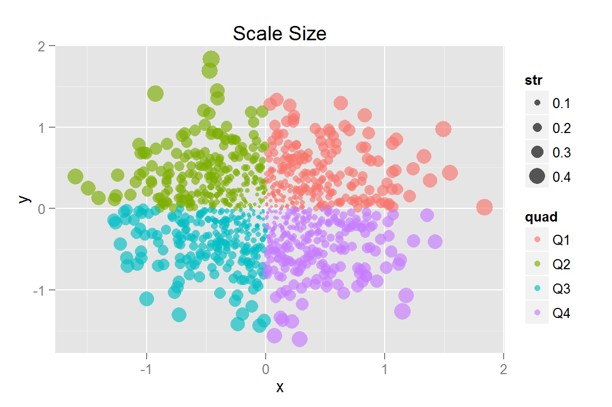
##
## $s12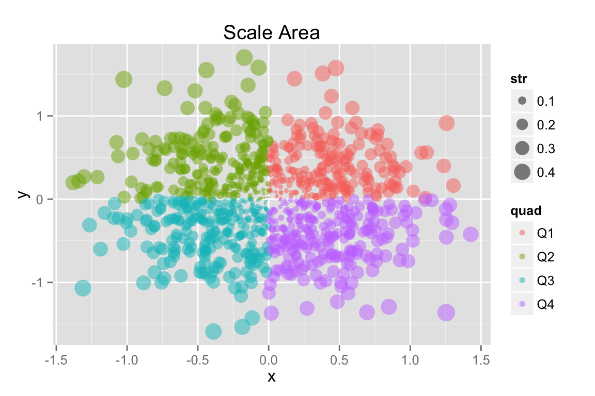
animint2dir(pts, "geoms/sizepoints")Click here to see the resulting animint plot(s).
geom_abline()
xydata <- data.frame(x = sort(runif(50, 0, 10)))
xydata$y <- 3 + 2 * xydata$x + rnorm(50, 0, 1)
g1 <- ggplot() +
geom_point(data = xydata, aes(x = x, y = y)) +
geom_abline(data = data.frame(intercept = c(3, 0), slope = c(2, 1)),
aes(intercept = intercept, slope = slope)) +
ggtitle("geom_abline")
g1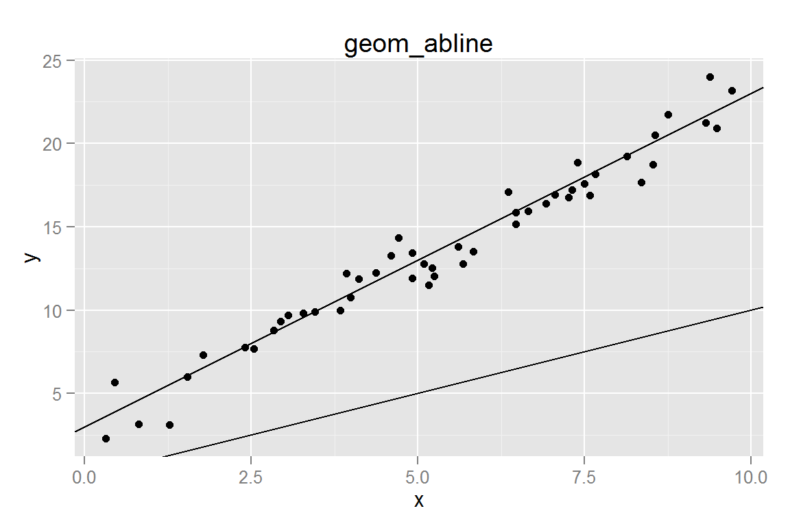
animint2dir(list(g1 = g1), "geoms/abline")Click here to see the resulting animint plot(s).
geom_ribbon()
ribbondata <- data.frame(x=seq(0, 1, .1),
ymin=runif(11, 0, 1),
ymax=runif(11, 1, 2))
ribbondata <- rbind(cbind(ribbondata, group = "low"),
cbind(ribbondata, group = "high"))
ribbondata[12:22, 2:3] <- ribbondata[12:22, 2:3] + 1
g2 <- ggplot() +
geom_ribbon(data = ribbondata, alpha = .5,
aes(x = x, ymin = ymin, ymax = ymax,
group = group, fill = group)) +
ggtitle("geom_ribbon")
g2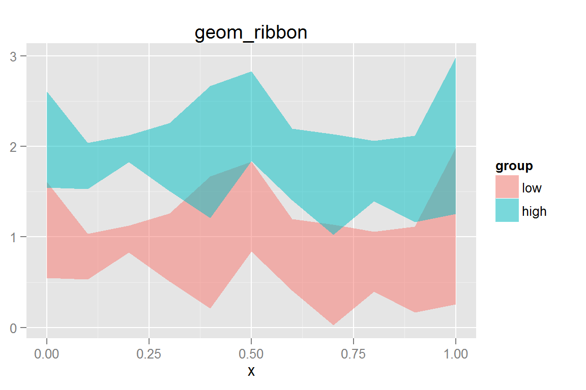
animint2dir(list(g2 = g2), "geoms/ribbon")Click here to see the resulting animint plot(s).
geom_tile()
tiledata <- data.frame(x = rnorm(1000, 0, 3))
tiledata$y <- rnorm(1000, tiledata$x, 3)
tiledata$rx <- round(tiledata$x)
tiledata$ry <- round(tiledata$y)
tiledata <- ddply(tiledata, .(rx,ry), summarise, n = length(rx))
g3 <- ggplot() +
geom_tile(data = tiledata,
aes(x = rx, y = ry, fill = n)) +
scale_fill_gradient(low = "#56B1F7", high = "#132B43") +
xlab("x") + ylab("y") + ggtitle("geom_tile")
g3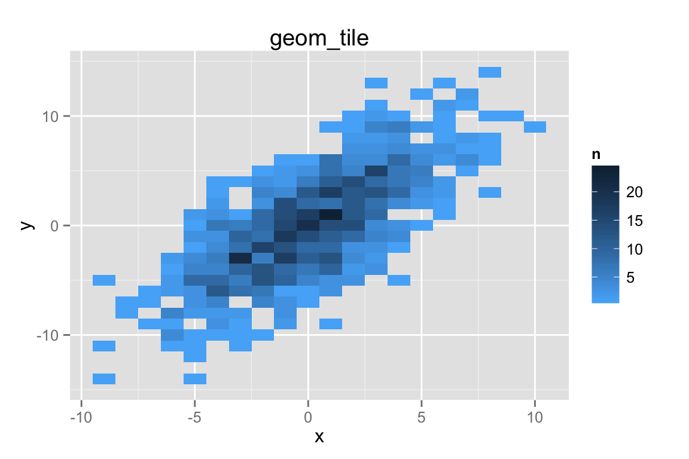
animint2dir(list(g3 = g3), "geoms/tile")Click here to see the resulting animint plot(s).
geom_path()
pathdata <- data.frame(x = rnorm(30, 0, .5), y = rnorm(30, 0, .5), z = 1:30)
g4 <- ggplot() +
geom_path(data = pathdata, alpha = .5,
aes(x = x, y = y)) +
geom_text(data = pathdata,
aes(x = x, y = y, label = z)) +
ggtitle("geom_path")
g4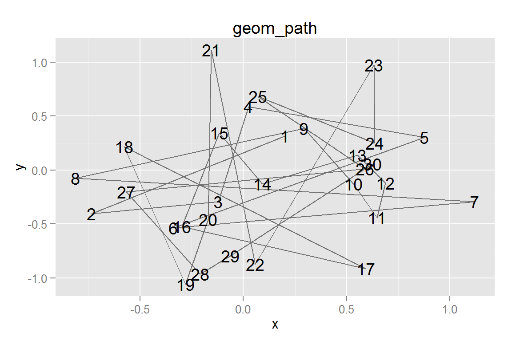
animint2dir(list(g4 = g4), "geoms/path")Click here to see the resulting animint plot(s).
geom_polygon()
polydata <- rbind(
data.frame(x = c(0, .5, 1, .5, 0), y = c(0, 0, 1, 1, 0),
group = "parallelogram", fill = "blue", xc = .5, yc = .5),
data.frame(x = c(.5, .75, 1, .5), y = c(.5, 0, .5, .5),
group = "triangle", fill = "red", xc = .75, yc = .33))
g5 <- ggplot() +
geom_polygon(data = polydata, alpha = .5,
aes(x = x, y = y, group = group,
fill = fill, colour = fill)) +
scale_colour_identity() + scale_fill_identity() +
geom_text(data = polydata, aes(x = xc, y = yc, label = group)) +
ggtitle("geom_polygon")
g5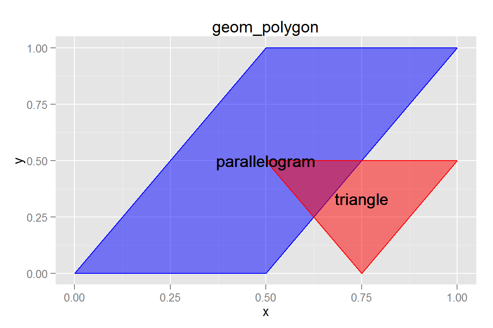
animint2dir(list(g5 = g5), "geoms/polygons")Click here to see the resulting animint plot(s).
geom_linerange()
boxplotdata <- rbind(data.frame(x = 1:50, y = rnorm(50, 3, 1), group = "N(3,1)"),
data.frame(x = 1:50, y = rnorm(50, 0, 1), group = "N(0,1)"),
data.frame(x = 1:50, y = rgamma(50, 2, 1/3), group = "Gamma(2,1/3)"))
boxplotdata <- ddply(boxplotdata, .(group), transform,
ymax = max(y), ymin = min(y), med = median(y))
g6 <- ggplot() +
geom_linerange(data = boxplotdata,
aes(x = factor(group), ymax = ymax, ymin = ymin,
colour = factor(group))) +
ggtitle("geom_linerange") + xlab("Distribution") +
scale_colour_discrete("Distribution")
g6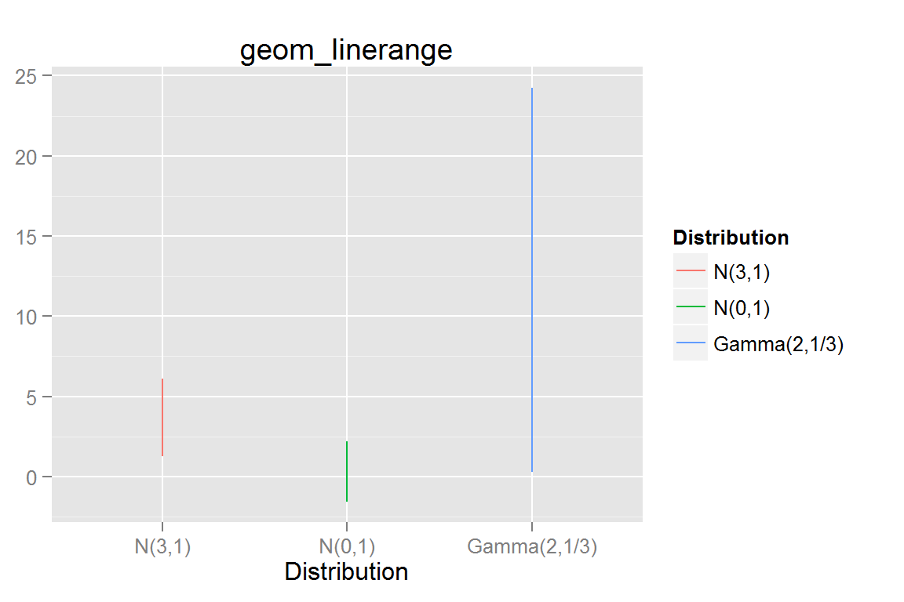
animint2dir(list(g6 = g6), "geoms/linerange")Click here to see the resulting animint plot(s).
geom_histogram()
g7 <- ggplot() +
geom_histogram(data = subset(boxplotdata, group == "Gamma(2,1/3)"),
aes(x = y, fill = ..count..), binwidth = 1) +
ggtitle("geom_histogram")
g7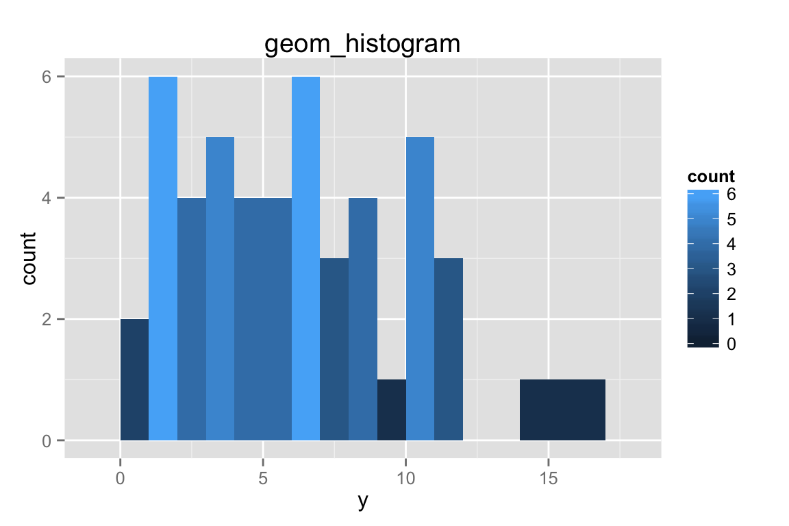
animint2dir(list(g7 = g7), "geoms/histogram")Click here to see the resulting animint plot(s).
geom_violin()
g8 <- ggplot() +
geom_violin(data = boxplotdata,
aes(x = group, y = y, fill = group, group = group)) +
ggtitle("geom_violin") + scale_fill_discrete("Distribution") +
xlab("Distribution")
g8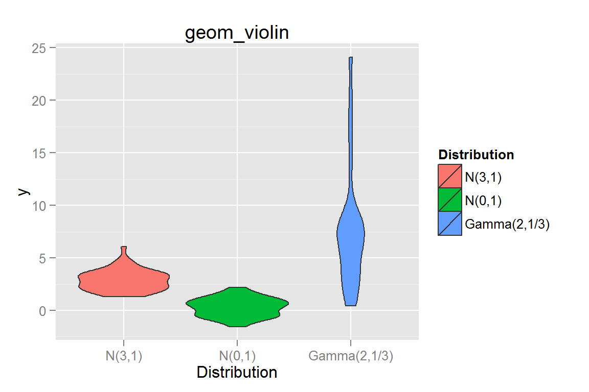
animint2dir(list(g8 = g8), "geoms/violin")Click here to see the resulting animint plot(s).
geom_step()
g9 <- ggplot() +
geom_step(data = boxplotdata,
aes(x = x, y = y, colour = factor(group), group = group)) +
scale_colour_discrete("Distribution") +
ggtitle("geom_step")
g9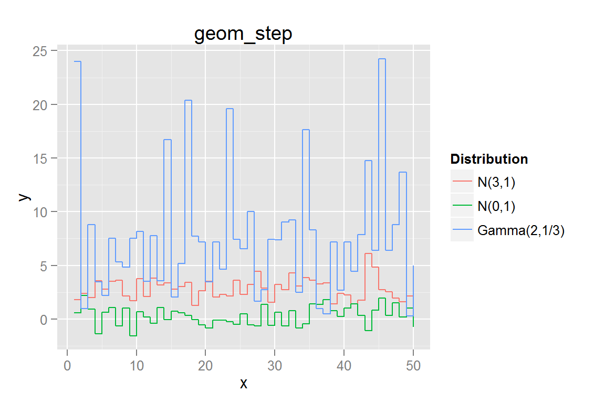
animint2dir(list(g9 = g9), "geoms/step")Click here to see the resulting animint plot(s).
geom_contour()
library(reshape2) # for melt
contourdata <- melt(volcano)
names(contourdata) <- c("x", "y", "z")
g11 <- ggplot() +
geom_contour(data = contourdata,
aes(x = x, y = y, z = z),
binwidth = 4, size = 0.5) +
geom_contour(data = contourdata,
aes(x = x, y = y, z = z), binwidth = 10, size = 1) +
ggtitle("geom_contour")
contourdata2 <- floor(contourdata/3) * 3 # to make fewer tiles
g12 <- ggplot() +
geom_tile(data = contourdata2,
aes(x = x, y = y, fill = z, colour = z)) +
geom_contour(data = contourdata,
aes(x = x, y = y, z = z),
colour = "black", size = .5) +
scale_fill_continuous("height", low = "#56B1F7", high = "#132B43",
guide = "legend") +
scale_colour_continuous("height", low = "#56B1F7", high = "#132B43",
guide = "legend") +
ggtitle("geom_tile + geom_contour")
contours <- list(g11 = g11, g12 = g12)
contours## $g11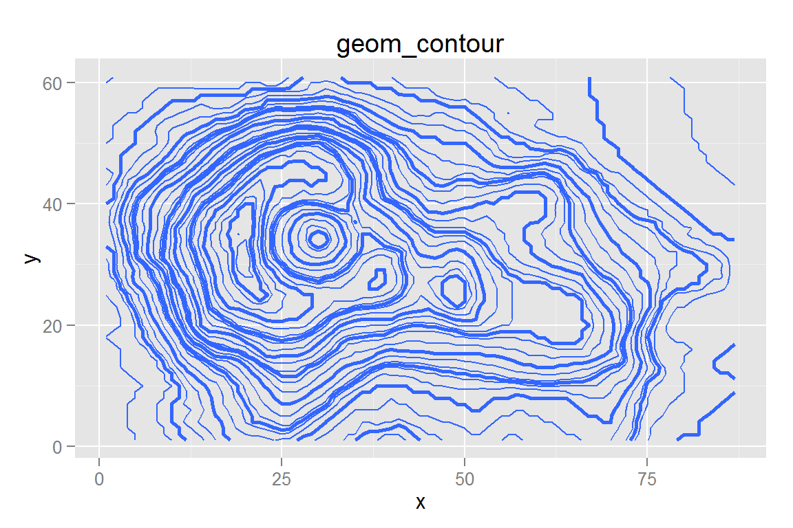
##
## $g12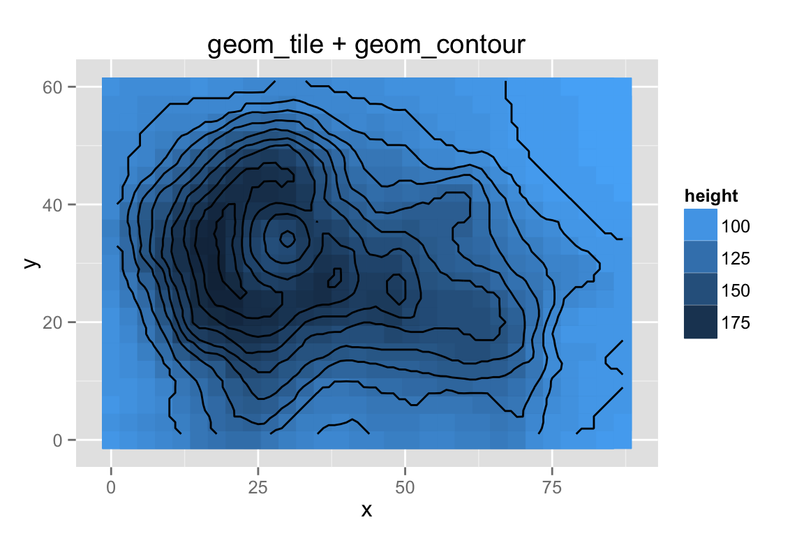
animint2dir(contours, "geoms/contours")Click here to see the resulting animint plot(s).
scale_y_log10() and geom_contour() with stat_density2d()
While stat_density2d() does not always work reliably, we can still use the statistic within another geom, such as geom_contour().
library("MASS")
data(geyser, package = "MASS")
g13 <- ggplot() +
geom_point(data = geyser,
aes(x = duration, y = waiting)) +
geom_contour(data = geyser,
aes(x = duration, y = waiting),
colour = "blue", size = .5, stat = "density2d") +
xlim(0.5, 6) + scale_y_log10(limits = c(40,110)) +
ggtitle("geom_contour 2d density")
g13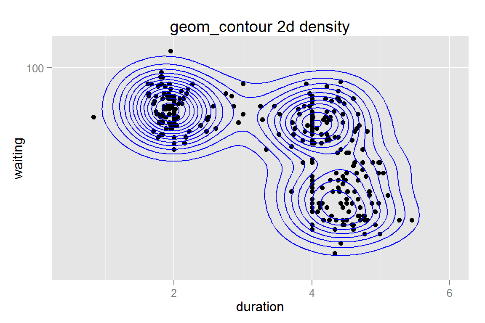
animint2dir(list(g13 = g13), "geoms/scaleycontour")Click here to see the resulting animint plot(s).
geom_polygon with stat = 'density2d' contours
g14 <- ggplot() +
geom_polygon(data = geyser,
aes(x = duration, y = waiting,
fill = ..level.., group = ..piece..),
stat = "density2d", alpha = .5) +
geom_point(data = geyser, aes(x = duration, y = waiting)) +
scale_fill_continuous("Density Level", low = "#56B1F7", high = "#132B43") +
guides(colour = guide_legend(override.aes = list(alpha = 1)),
fill = guide_legend(override.aes = list(alpha = 1))) +
scale_y_continuous(limits = c(40,110), trans = "log10") +
scale_x_continuous(limits = c(.5, 6)) +
ggtitle("geom_density2d polygon")
g14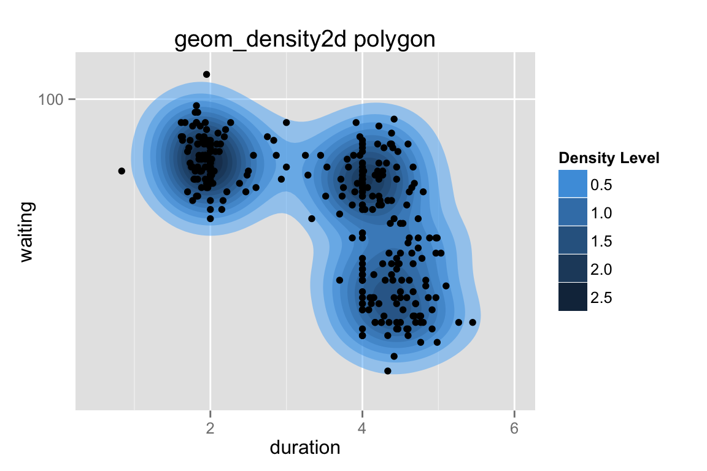
animint2dir(list(g14 = g14), "geoms/densitypolygon")Click here to see the resulting animint plot(s).
Tile plot filled by density
data(diamonds)
dsmall <- diamonds[sample(nrow(diamonds), 1000), ] # reduce dataset size
g15 <- ggplot() +
geom_tile(data = dsmall, stat = "density2d", contour = FALSE, n = 30,
aes(x = carat, y = price, fill = ..density.., colour = ..density..)) +
scale_fill_gradient(limits = c(1e-5,8e-4), na.value = "white") +
scale_colour_gradient(limits = c(1e-5,8e-4), na.value = "white") +
ggtitle("geom_density2d tile") + ylim(c(0, 19000))
g15
animint2dir(list(g15 = g15), "geoms/tiledensity")Click here to see the resulting animint plot(s).
Density mapped to point size
g16 <- ggplot() +
geom_point(data = dsmall, aes(x = carat, y = price, alpha = ..density..),
stat = "density2d", contour = FALSE, n = 10, size = I(1)) +
scale_alpha_continuous("Density") +
ggtitle("geom_density2d points")
g16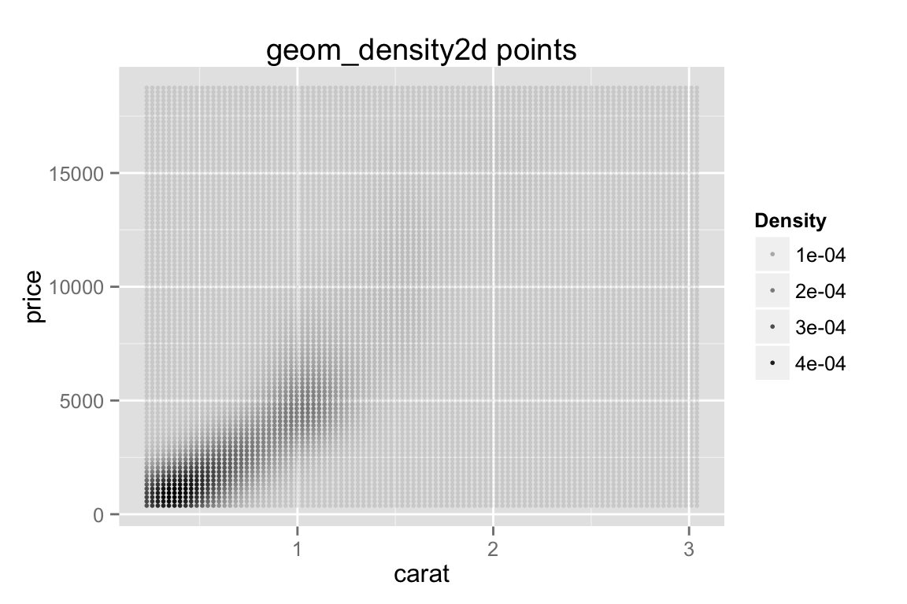
animint2dir(list(g16 = g16), "geoms/pointdensity")Click here to see the resulting animint plot(s).
Creating maps with animint
While geom_map() is not implemented in animint, it is possible to plot a map using geom_polygon() and merge. As map data frames can be rather large, it may be useful to use a point thinning algorithm, such as the dp() function in the shapefiles] to reduce the number of points in each polygon.
library(reshape2) # for melt
library(maps)
# obtain data for US Arrests
crimes <- data.frame(state = tolower(rownames(USArrests)), USArrests)
crimesm <- melt(crimes, id = 1)
# data frame should contain only counts of number of assaults
crimes.sub <- subset(crimesm, variable == "Assault")
# load map for mainland US
states_map <- map_data("state")
# merge assault data with map data, so that each state
# ("region" in the map dataframe) has a corresponding
# entry for number of assaults.
assault.map <- merge(states_map, subset(crimesm, variable == "Assault"),
by.x = "region", by.y = "state")
assault.map <- assault.map[order(assault.map$group, assault.map$order),]
g17 <- ggplot() +
geom_polygon(data = assault.map,
aes(x = long, y = lat, group = group,
fill = value, colour = value)) +
expand_limits(x = states_map$long, y = states_map$lat) +
ggtitle("geom_polygon map") + ylim(c(12, 63)) +
geom_text(data = data.frame(x = -95.84, y = 55, label = "Arrests for Assault"),
hjust = .5, aes(x = x, y = y, label = label))
g17 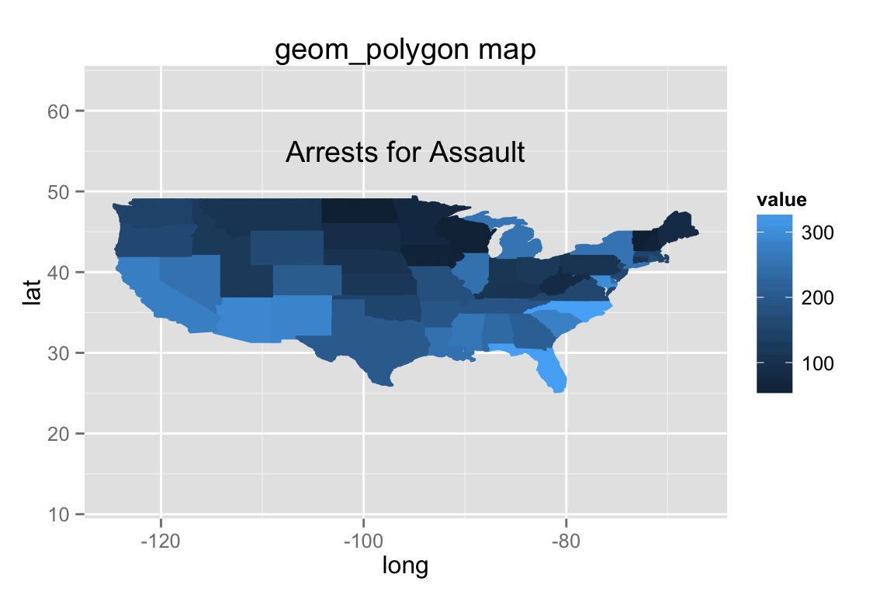
animint2dir(list(g17 = g17), "geoms/maptutorial")Click here to see the resulting animint plot(s).
Stacked bar chart
While geom_bar() does not work well with clickSelects, it does work when creating a static plot. If you need to use clickSelects to select a specific bar, you should use make_bar(), stat_summary(), or calculate the relevant dataframe. This ensures that clickSelects does not conflict with the specification of individual plot elements in ggplot2. See the tornadoes example for more information and examples of clickSelects with geom_bar().
g18 <- ggplot() +
geom_bar(data = mtcars,
aes(x = factor(cyl), fill = factor(vs))) +
ggtitle("geom_bar stacked")
g18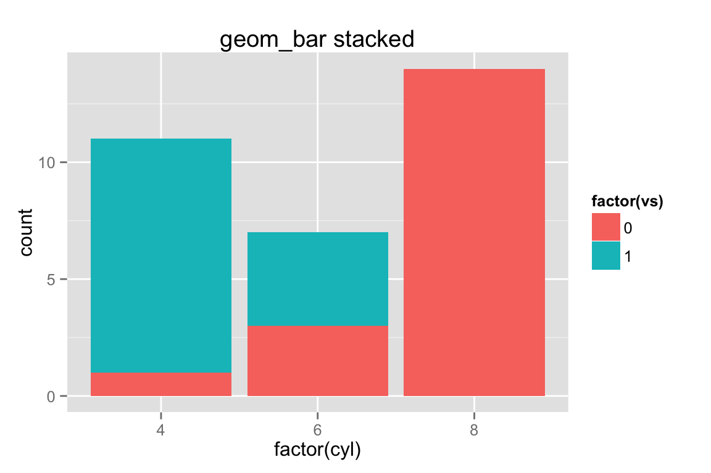
animint2dir(list(g18 = g18), "geoms/stackedbar")Click here to see the resulting animint plot(s).
geom_area() with stat_density()
data(diamonds)
g19 <- ggplot() +
geom_area(data=diamonds, aes(x=clarity, y=..count.., group=cut, colour=cut, fill=cut), stat="density") +
ggtitle("geom_area")
g19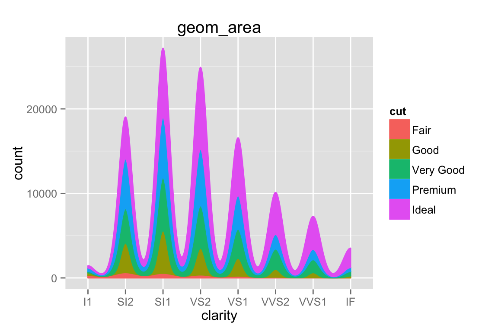
animint2dir(list(g19 = g19), "geoms/areadensity")Click here to see the resulting animint plot(s).
geom_freqpoly()
g20 <- ggplot() +
geom_freqpoly(data = diamonds,
aes(x = clarity, group = cut, colour = cut)) +
ggtitle("geom_freqpoly")
g20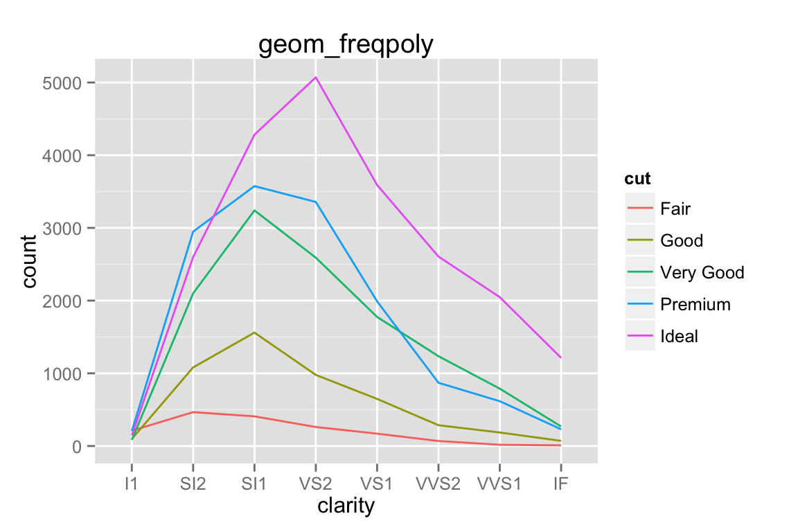
animint2dir(list(g20 = g20), "geoms/freqpoly")Click here to see the resulting animint plot(s).
geom_hex()
g21 <- ggplot() +
geom_hex(data = dsmall, aes(x = carat, y = price)) +
scale_fill_gradient(low = "#56B1F7", high = "#132B43") +
xlab("x") + ylab("y") + ggtitle("geom_hex")
g21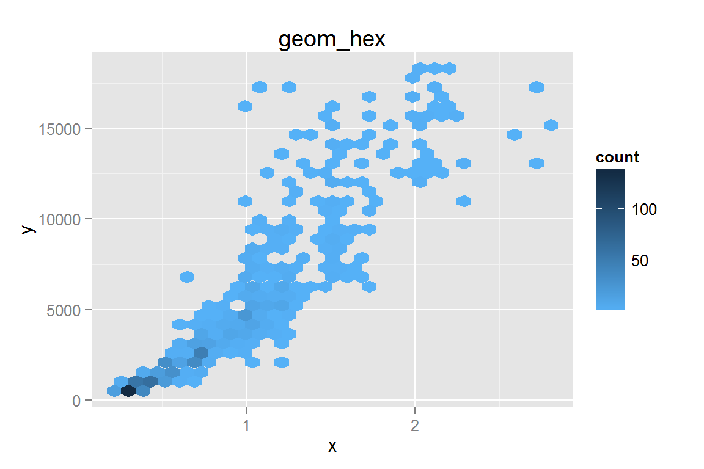
animint2dir(list(g21 = g21), "geoms/hex")Click here to see the resulting animint plot(s).
Session Info
sessionInfo()## R version 3.1.3 (2015-03-09)
## Platform: x86_64-w64-mingw32/x64 (64-bit)
## Running under: Windows 8 x64 (build 9200)
##
## locale:
## [1] LC_COLLATE=English_United States.1252
## [2] LC_CTYPE=English_United States.1252
## [3] LC_MONETARY=English_United States.1252
## [4] LC_NUMERIC=C
## [5] LC_TIME=English_United States.1252
##
## attached base packages:
## [1] stats graphics grDevices utils datasets methods base
##
## other attached packages:
## [1] hexbin_1.27.0 MASS_7.3-39 reshape2_1.4.1
## [4] lubridate_1.3.3 maps_2.3-9 plyr_1.8.1
## [7] animint_2015.05.11 proto_0.3-10 ggplot2_1.0.0.99
##
## loaded via a namespace (and not attached):
## [1] colorspace_1.2-4 digest_0.6.8 evaluate_0.5.5 formatR_1.0
## [5] grid_3.1.3 gtable_0.1.2 htmltools_0.2.6 knitr_1.9
## [9] labeling_0.3 lattice_0.20-30 memoise_0.2.1 munsell_0.4.2
## [13] Rcpp_0.11.5 RJSONIO_1.3-0 rmarkdown_0.5.1 scales_0.2.4
## [17] stringr_0.6.2 tools_3.1.3 yaml_2.1.13